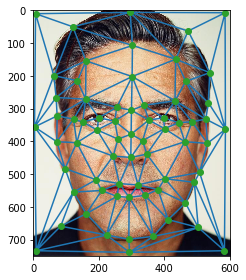

In this project, the goal is to morph faces to match a certain geometry and coloring. This allows us to smoothly morph faces to other faces and merge two faces together.
In order to warp a face image, we need to define the face's structure. To do this we want to generate a triangle mesh over the face. We do this by first identifying common facial landmarks and then generating a triangle mesh over these points. I picked out the facial landmarks using this labelling tool: tool. Then I used Delaunay triangulation to generate the mesh (the triangulation is actually generated from the midpoints of these facial landmarks to reduce potential triangle deformation). Here are two images taken by Martin Schoeller and their meshes.

Since both images above have a bijective relationship between their landmark points and as well as their triangles, we can produce a morph of the two faces. Specifically, we can generate a mid-way face that merges the two faces together. We do this by first computing the midpoints of all the corresponding points in the two faces. We then generate a Delaunay triangulation for these points and apply this triangulation to the two faces and this midpoint set. Next, we determine the affine transforms from each triangle in the midpoint structure to the corresponding triangles in the two face images. Then we go through all the points in each triangle in the midpoint set and use the associated transform to figure out the pixel value of the associated point in the face images. We use this to figure out the pixel values in the midway image. After interpolation, this will warp both face images to the midway geometry. Then we can average the two warped faces to get a midway face. The result is shown below:
In the previous section we morphed the two faces to a midway point, but we can use a similar procedure to morph the faces to any point in between them. Instead of finding the midpoint between corresponding landmark points, we can find a point 'warp_frac' of the way from one face and 1-warp_frac of the way from the second face. And if we can produce all the morphs for warp_frac ranging from 0 to 1, we can generate a smooth transformation from one face to another.
We can apply the warping procedure from before to generate an average geometry for a collection of faces and warp faces to this average geometry. I did this for a subset of the IMM Face Database. Here are the results of warping faces from the database to the average geometry (as well as my face warped to the average geometry).
I also took all these warped results for each face in the databased and averaged them to get an average face.
Here is the average warped to my face.
We can extrapolate from the mean geometry to generate carcicatures. So given the set of landmarks in the mean geometry, m, and the set of landmarks in a single face, q, we can generate a caricature by warping the single face to the geometry of the q + k(m - q). Below are the results for when k = -0.75 and 1.75.
Having to manually select facial landmarks can be tedious and subject to human error. Automatic facial landmark detection remedies this issue and makes morphing easier to perform. I implemented this by using the 'dlib' library to automatically identify 68 facial landmarks in a given face. I added four extra points to these in order to account for the edges of an image. This was then subject to the same procedure detailed above to morph two images. Here is an example of the automatically labelled landmarks and the resulting morph.